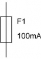
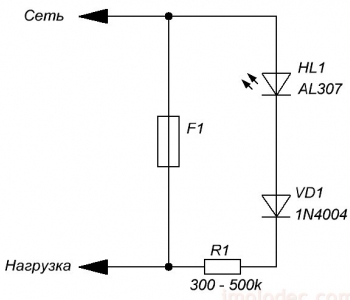
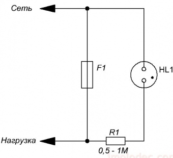
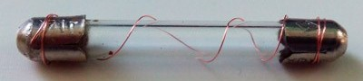
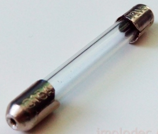
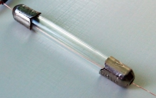
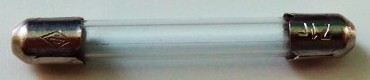
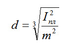
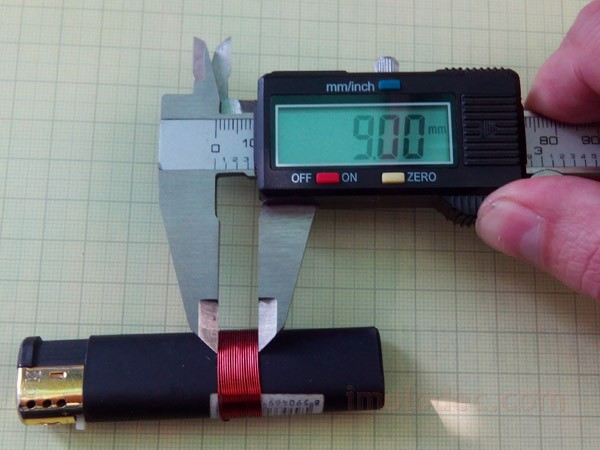

Ремонт трубчатого предохранителя
В современных электроприборах повсюду встречаются предохранители, или если говорить «по научному» — плавкие вставки. Они обеспечивают защиту сети и собственно самого прибора от коротких замыканий или перегрузки. Конструкция плавких вставок самая разнообразная, как и размеры. Номинальные токи и напряжения на которые выпускаются предохранители соответствуют стандартным значениям. От величины номинального напряжения предохранителя зависят его габаритные размеры, а именно длина, чем выше номинальное напряжение предохранителя тем больше расстояние между контактами. Номинальный ток определяется сечением проволоки внутри предохранителя.
Хотя в более дорогих устройствах уже можно встретить и самовосстанавливающиеся электрические предохранители, большинство приборов по-прежнему оснащены обычными предохранителями.
Общие понятия
Наиболее распространенные предохранители это так называемые, трубчатые. Они представляют из себя керамическую или стеклянную трубку с металлическими контактами-чашками с торцов. Эти чашки соединены между собой проволокой, сечение которой, как уже говорилось, определяет номинальный ток предохранителя. Этот ток указывается на трубке или одной из контактных частей предохранителя. Например: F0,5A – это значит, что данный предохранитель рассчитан на ток 0,5 ампера.
На электрических принципиальных схемах предохранитель обозначается прямоугольником с проходящей через него прямой линией. Рядом с условным графическим обозначением указывается его позиционное обозначение, например F1 (F – fuse, предохранитель по-английски); и если это не загромождает схему — номинальный ток, например 100 mA.

Рис. 1 - Условное графическое обозначение предохранителя на схеме
Описание принципа работы плавкой вставки (предохранителя)
Принцип работы предохранителя предельно прост. При протекании по проволоке, соединяющей контакты предохранителя, номинального тока, эта проволока разогревается до температуры около 70 ?С. А вот при превышении тока, проволока разогревается сильнее, и при превышении температуры плавления – расплавляется, т.е. перегорает. Именно по этой причине предохранители еще называют – плавкими или плавкой вставкой. Чем выше ток, тем быстрее нагрев, тем быстрее происходит расплавление, а соответственно и перегорание предохранителя.
Таким образом все плавкие вставки работают на одном и том же принципе – превышение тока в цепи вызывает перегрев и расплавление проволоки внутри предохранителя и как следствие отключение этой цепи от источника питающей сети.
Существует две основных причины перегорания плавких вставок: броски напряжения питающей сети и возникшая неисправность внутри самого электроприбора.
Проверка предохранителя, индикатор неисправности предохранителя
Проверить плавкую вставку можно любой «прозвонкой» или тестером. Задача состоит в том, чтобы убедиться, что цепь предохранителя цела и способна проводить электрический ток.
Проверять предохранитель, во избежание поражения электрическим током, допускается только при отключенном электроприборе!
Кроме этого можно купить или самостоятельно изготовить индикатор перегорания предохранителя, который уведомит вас о том, что предохранитель перегорел.
Схема такого устройства чрезвычайно проста и представлена на следующем рисунке.

Рис. 2 - Схема индикатора перегорания предохранителя на светодиоде
В параллель к контактам предохранителя, через токоограничивающий резистор R1 и диод VD1, для защиты от обратного напряжения, подключается светодиод HL1. Диод VD1 должен быть подобран из расчета обратного напряжения, превышающего сетевое. Для сети 220 В обратное напряжение для диода VD1 должно быть не менее 300 В, таким требованиям отвечает например диод 1N4004 или отечественный КД109Б.
Индикатор не светится, если предохранитель исправен, и светится в случае его перегорания.
Индикатор не светится если нагрузка отключена.
Такой схемой очень удобно дополнять блоки питания собственного изготовления.
Немного изменив (упростив) схему можно получить индикатор перегорания предохранителя на неоновой лампе, хотя она и не так эффективно смотрится как светодиод.

Рис. 3 - Схема индикатора перегорания предохранителя на неоновой лампочке
Подбор предохранителя по номинальной мощности электроприбора
После проверки предохранителя и определения, что он вышел из строя, необходимо его заменить. А для этого надо узнать его номинал, чтобы выполнить правильную замену.
Если вам известна мощность потребляемая электроприбором, обычно она указывается на шильде прибора, вы можете самостоятельно рассчитать номинальный ток предохранителя по следующей формуле:
Iном = Рмакс / Uном
Номинальный ток (Ампер) равен частному от максимальной мощности (Ватт) электроприбора деленной на номинальное напряжение сети (Вольт).
Например, сгорел предохранитель в телевизоре, разобрать, что указано на корпусе предохранителя, его номинал, не представляется возможным, но на шильде телевизора указана мощность потребления 150 ВА.
150 / 220 = 0,68, округляем до ближайшего большего стандартного значения – 1 А.
Обратите внимание, что при расчете номинального тока предохранителя вы получаете точное значение тока, которое может не соответствовать ряду номинальных токов предохранителей. Поэтому расчетное значение с учетом запаса 5% округляется до ближайшего стандартного значения.
Для простоты можно воспользоваться готовой таблицей (табл. 1), в которой приведены номиналы стандартных предохранителей для различных потребителей из расчета их подключения к бытовой сети 220 В.
Таблица 1
| Мощность электроприбора, Вт (BA) | 10 | 50 | 100 | 150 | 250 | 500 | 800 | 1000 | 1200 |
|---|---|---|---|---|---|---|---|---|---|
| Номинал предохранителя, А | 0,1 | 0,25 | 0,5 | 1,0 | 2,0 | 3,0 | 4,0 | 5,0 | 6,0 |
| Мощность электроприбора, Вт (BA) | 1600 | 2000 | 2500 | 3000 | 4000 | 6000 | 8000 | 10000 |
|---|---|---|---|---|---|---|---|---|
| Номинал предохранителя, А | 8,0 | 10,0 | 12,0 | 15,0 | 20,0 | 30,0 | 40,0 | 50,0 |
Замена предохранителя
При замене предохранителя, во избежание поражения электрическим током, обязательно отключите электроприбор от сети!
Есть такое негласное правило, если после второй замены предохранитель опять перегорел, ищи неисправность в самом электроприборе. Значит надо ремонтировать электроприбор.
Ни в коем случае не устанавливайте предохранитель на больший ток, такие попытки однозначно приведут к еще большему повреждению устройства вплоть до его не ремонтопригодности!
Ремонт предохранителя
Типичные обыватели считают, что предохранители не подлежат ремонту, на самом деле это не так. Большинство типов предохранителей можно отремонтировать и дать им вторую, третью и т.д. жизни. Корпус предохранителя, как правило, разрушается крайне редко, перегорает проволока внутри, вот в ее замене и заключается ремонт. Основная задача при этом использовать проволоку аналогичную той, что была в предохранителе.
Если заменить предохранитель надо очень быстро, а запасного под рукой не оказалось, то можно воспользоваться следующим способом: снять с проволоки подходящего диаметра лакокрасочное покрытие (зачистить ее до блеска) и намотать на каждый контакт предохранителя по несколько витков, после чего вставить предохранитель в держатель (рис. 4). Этот способ в простонародии называется – «жучок». С его помощью можно очень быстро проверить исправность прибора, но он не надежен и может быть использован, как временное решение проблемы.
Внимание! Использование "жучка" может привести к опасным последствиям!

Рис. 4 - «Жучок»
Следующий способ, так называемый «заводской». Для ремонта потребуется паяльник, и возможно дремель или шуруповерт, но предохранитель после ремонта будет выглядеть как будто он только что с завода.
Разогрейте паяльником торцы контактов-чашек и освободите отверстия в торцах от припоя воспользовавшись зубочисткой или чем-то подобным. Бывает, что отверстия слишком малы или совсем отсутствуют, тогда придется их просверлить. Используйте сверло не большого диаметра 1...2 мм (рис. 5).

Рис. 5 - Подготовленный к ремонту предохранитель
Проденьте через отверстия проволоку подходящего диаметра (рис. 6) и припаяйте ее к контактам-чашкам (рис. 7).

Рис. 6 - Предохранитель с продетой проволокой

Рис. 7 - Отремонтированный предохранитель
Подбор диаметра проволоки предохранителя
Как написано выше, для ремонта предохранителя необходимо заменить перегоревшую проволоку на аналогичную той, что была в предохранителе до его перегорания.
В заводских предохранителях используются проволоки из различных металлов: серебра, меди, алюминия, олова, свинца, никеля и т.д. В домашних условиях вряд ли мы сможем определить материал проволоки перегоревшего предохранителя, да и под рукой у нас обычная медная проволока. Приведем таблицу диаметров проволоки в зависимости от номинального тока предохранителя содержащую кроме меди, алюминий, сталь и олово.
Таблица 2
| Ток предохранителя, А | 0,25 | 0,5 | 1,0 | 2,0 | 3,0 | 5,0 | 7,0 | 10,0 | |
| Диаметр проволоки, мм | Медь | 0,02 | 0,03 | 0,05 | 0,09 | 0,11 | 0,16 | 0,20 | 0,25 |
| Алюминий | - | - | 0,07 | 0,10 | 0,14 | 0,19 | 0,25 | 0,30 | |
| Железо | - | - | 0,32 | 0,20 | 0,25 | 0,35 | 0,45 | 0,55 | |
| Олово | - | - | 0,18 | 0,28 | 0,38 | 0,53 | 0,66 | 0,85 | |
| Ток предохранителя, А | 15,0 | 20,0 | 25,0 | 30,0 | 35,0 | 40,0 | 45,0 | 50,0 | |
| Диаметр проволоки, мм | Медь | 0,33 | 0,40 | 0,46 | 0,52 | 0,58 | 0,63 | 0,68 | 0,73 |
| Алюминий | 0,40 | 0,48 | 0,56 | 0,64 | 0,70 | 0,77 | 0,83 | 0,89 | |
| Железо | 0,72 | 0,87 | 1,00 | 1,15 | 1,26 | 1,38 | 1,50 | 1,60 | |
| Олово | 1,02 | 1,33 | 1,56 | 1,77 | 1,95 | 2,14 | 2,30 | 2,45 | |
Расчет диаметра проволоки предохранителя
В случае если необходим предохранитель на ток, не указанный в таблице выше, можно воспользоваться формулой для расчета диаметра медной проволоки в зависимости от номинального тока предохранителя.
Для малых токов (при использовании тонкой проволоки диаметром от 0,02 до 0,2 мм) формула имеет следующий вид:
d = Iпл·k + 0,005
Для больших токов (при использовании проволоки диаметром более 0,2 мм) формула такая:

где
Iпл – ток плавкой вставки в амперах,
к и m - коэффициенты, зависящие от материала проводника, могут быть определены по таблице 3.
Таблица 3
| Материал проволоки | Коэффициенты | |
|---|---|---|
| k | m | |
| Медь | 0,034 | 80 |
| Алюминий | - | 59,2 |
| Железо | 0,127 | 24,6 |
| Олово | - | 12,8 |
Определение диаметра проволоки предохранителя
На заводских бухтах диаметр проволоки указывается на ряду с другими параметрами. А что делать если проволока взята из обрезка многопроволочного провода? Диаметр проволоки можно измерить микрометром. Но даже если нет микрометра можно воспользоваться старым способом – измерить диаметр проволоки при помощи линейки или штангенциркуля. Пусть не так точно, но для нашего случая вполне приемлемо.
Берем линейку и наматываем на нее от 10 до 20 витков. Рекомендуемая ширина намотки около сантиметра. При этом стараемся, чтобы витки ложились как можно плотнее. Считаем, сколько миллиметров заняли наши витки и делим это число на количество витков. Не обязательно наматывать на линейку, если кусок проволоки короткий, можно для намотки использовать карандаш, отвертку, зажигалку или любой другой предмет. Главное, чтобы витки были намотаны равномерно и плотно.

Рис. 8 - Измерение диаметра проволоки
Например, ширина намотанных витков 9 мм, при количестве витков 20. Разделив 9 на 20 получаем, что диаметр проволоки, если отбросить еще 0,05 мм на зазоры между витками, примерно 0,40 мм. При помощи этой проволоки можно будет восстановить предохранитель на 20 А.
Источники:
unradio.ru - Ремонт трубчатого предохранителя, выбор диаметра проволоки
imolodec.com - Ремонт трубчатого предохранителя, выбор диаметра проволоки